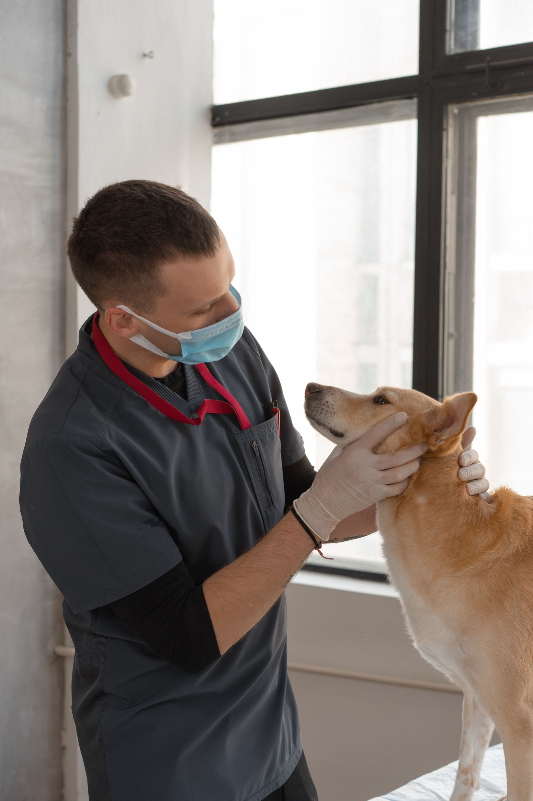

Routine wellness visits
Routine wellness visits.
D'Iberville Veterinary Hospital
D'Iberville, Mississippi
D'Iberville Veterinary Hospital is a full-service animal hospital, in business since 1980 and caring for pet and farm animals. Services include routine wellness visits, vaccinations, spay and neuter surgery, soft tissue and orthopedic surgery, radiographs, boarding and daycare, and emergency service. House calls are available by appointment. Dr. Jeffrey Comstock is named on the practice site.
Call the hospital: (228) 392-3295
Routine wellness visits.
Vaccinations.
Spay and neuter surgery.


All photos on this page are stock photos, not photos of this business.
10251 D'Iberville Blvd, D'Iberville, Mississippi
Plan a visitCall: (228) 392-3295